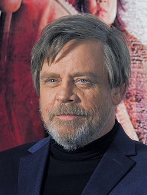
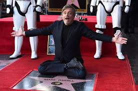
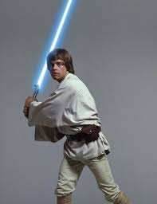
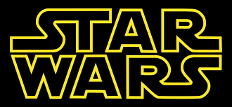

Mark Hamill 1951. szeptember 25-én született Kaliforniában.Kétszeres Szaturnusz-díjas amerikai filmszínész, akinek a pályáját a mai napig meghatározza, hogy ő játszotta Luke Skywalkert George Lucas elsőként leforgatott, ma már klasszikusnak számító Csillagok háborúja-trilógiájában.
Ifjúkora és pálykezdése
Édesapja (William Thomas Hamill) az amerikai haditengerészetnél szolgált. Ezért Mark ifjúkorában hol Kaliforniában, hol Virginiában, hol New Yorkban, hol Japánban élt. Színészetet Los Angelesben tanult, a City College-ban. Első televíziós szerepét a The Bill Cosby-show-ban kapta 1970-ben. Majd Kent Murray-t játszotta a General Hospital című televíziós sorozatban. A The Texas Wheelers című televíziós vígjátéksorozatban is szerepelt (1974). Mozis karrierje 1977-ben indult: csak a hangja volt hallható a Wizards című fantasztikus filmben.
  Filmes Karrierje
George Lucas klasszikus, elsőként forgatott Csillagok háborúja-trilógiájának mindegyik filmjében ő játszotta a főszereplőt, Luke Skywalkert. Általa világhírre tett szert. (E filmekben szinte minden akciójelenetet maga alakított, dublőr nélkül)
-1997:Csillagok háborúja IV: Egy új remény
-1980:Csillagok háborúja V: A Birodalom visszavág
-1983:Csillagok háborúja VI: A Jedi Visszatér
